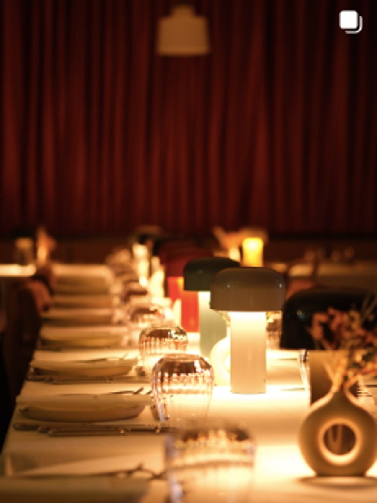
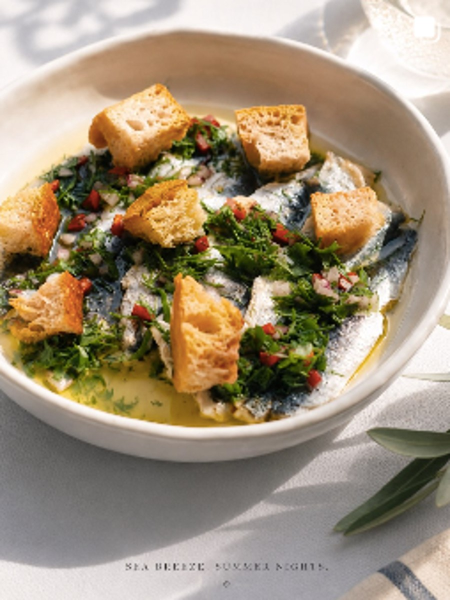
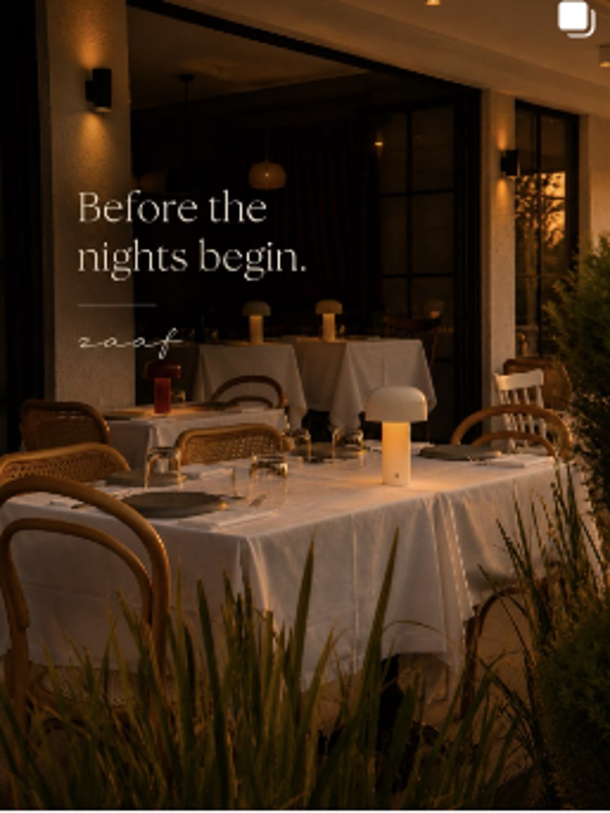
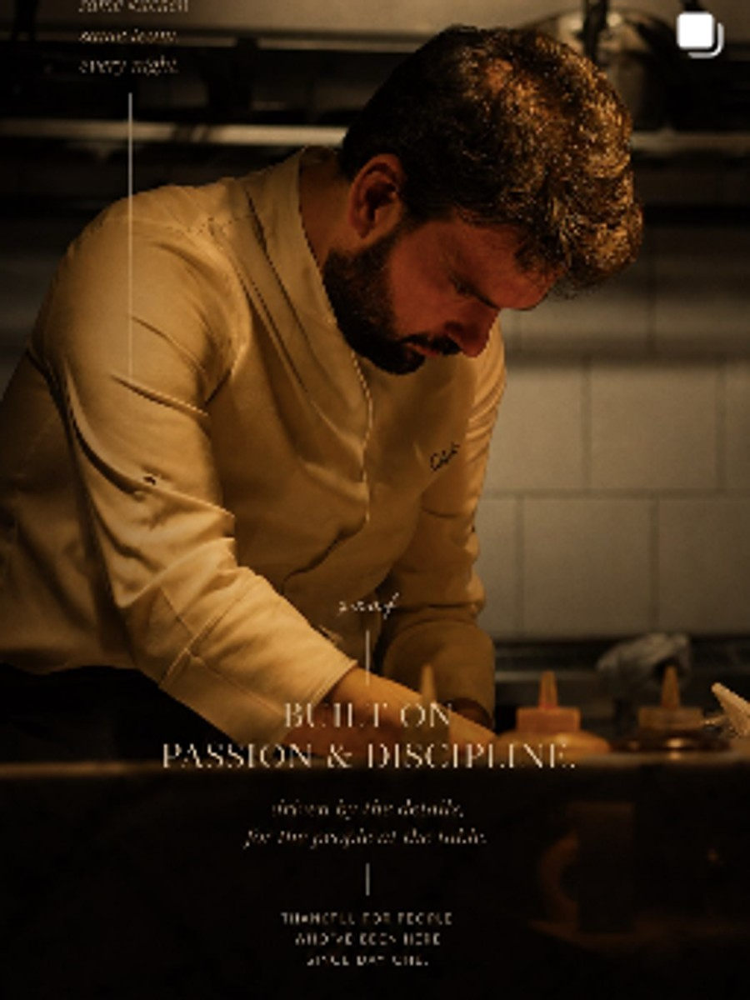
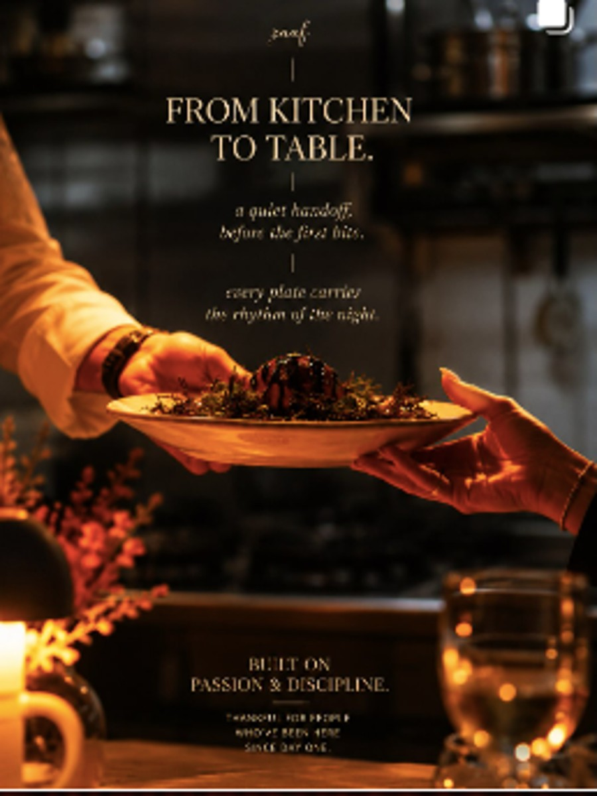
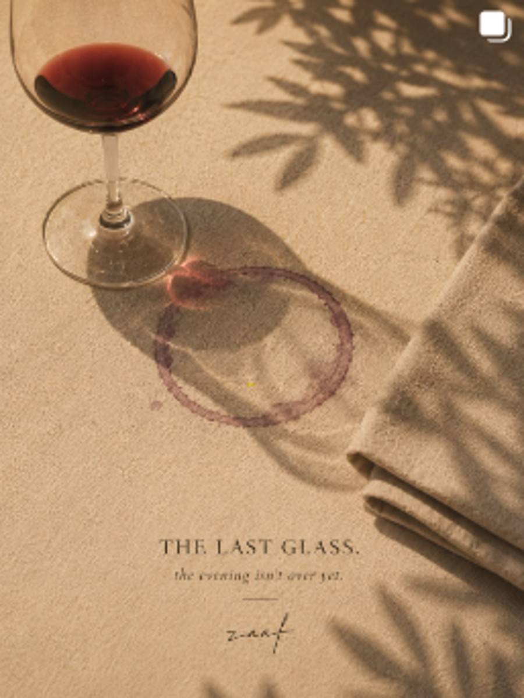
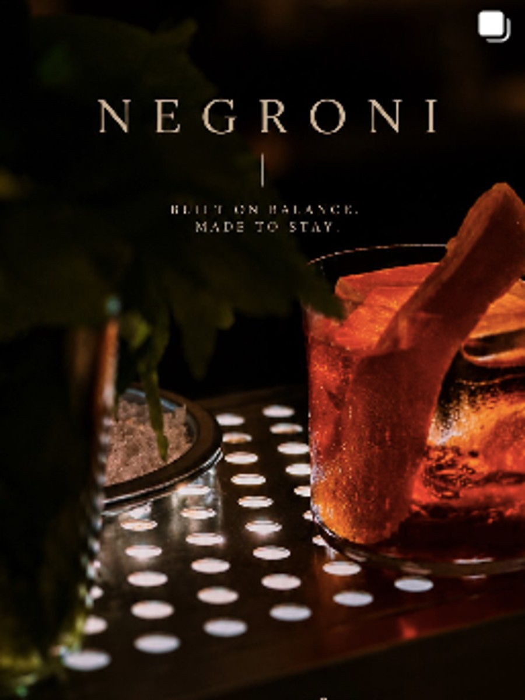
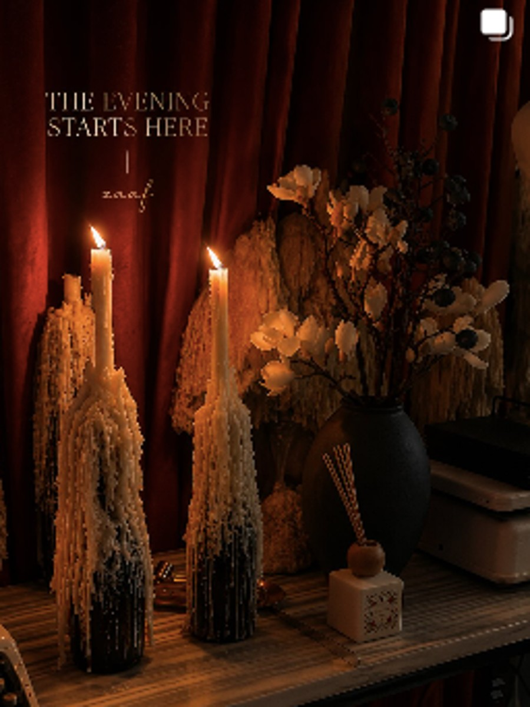
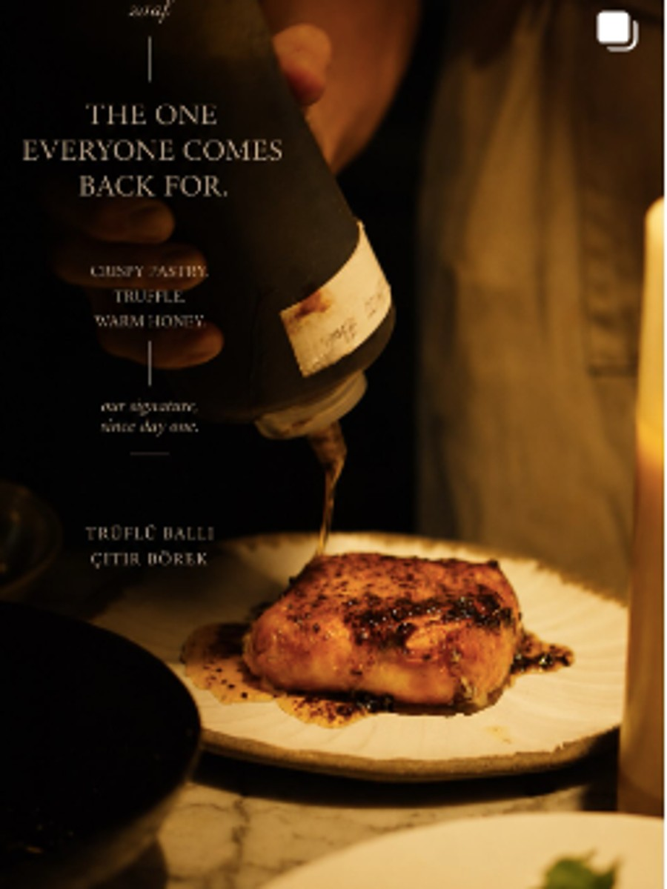
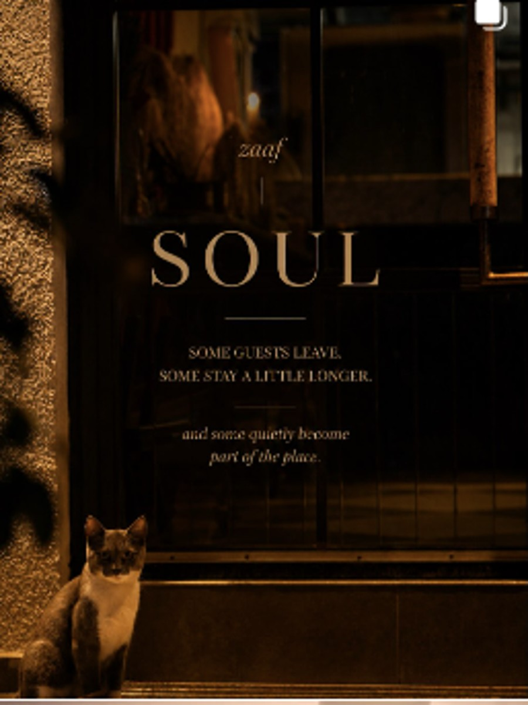

zaaf
Mevsimle değişen tabaklar. Uzayan akşamlar. Kendine ait bir mutfak dili.
Tanıdık tatlara, kişisel bir yorum.
Zaaf, Şef Aras Çetin’in mevsimle birlikte değişen mutfak dili etrafında şekillenen küçük bir şef restoranı. İyi malzeme, açık ateş, sezgi ve sofrada uzun kalma isteği aynı akşamda buluşuyor.

Menü sabit değil. Zaaf da değil.
Mevsim değiştikçe malzeme, tabak ve hikâye de değişiyor. Bazı Zaaf klasikleri geri dönüyor; bazıları yerini o dönemin fikrine bırakıyor.

İyi yemek. Doğru ışık. Uzun bir akşam.
Beyaz örtülü masalar, loş ışık ve küçük bir salon. Zaaf’ta mekân, tabağın önüne geçmeden akşamın ritmini tamamlar.

Aras Çetin
Zaaf’ın mutfağı trendlerden çok sezgiye, hafızaya ve malzemeye dayanıyor. Tanıdık bir lezzeti alıp onu başka bir açıdan anlatmak; tekniği görünür kılmadan tabağın karakterini güçlendirmek mutfağın temel yaklaşımı.
Masadan kalan.
Mutfak, servis, içki ve mekân aynı akşamın parçaları. Bazen geriye bir tabak, bazen bir kadeh, bazen de yalnızca o masada geçen zaman kalır.





Masada buluşalım.
Pazar 16:00–22:00 · Pazartesi kapalı
Beşiktaş · İstanbul
